Activity: Flange and corner conditions
Click here to download the activity files.
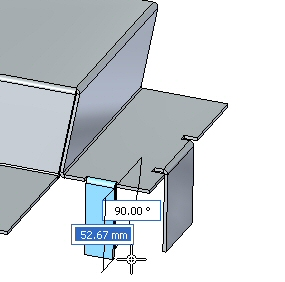
Activity objectives
This activity demonstrates control flange geometry and end contditions within a sheet metal part. In this activity you will:
-
Place flanges.
-
Place partial flanges.
-
Define and edit bend relief for bends.
-
Defining corner conditions.
-
Inserting a bend across a layer face.
-
Rotating faces.
Start Solid Edge 2023.
Open flange_activity.psm.
This sheet metal part has a material thickness of 1.50 mm and a bend radius of 1.00 mm.
On the File menu, click Save As→Save As.
On the Save As dialog box, in the File box, save the part to a new name or location so that other users can complete this activity.
Select the face shown and click the flange start handle.
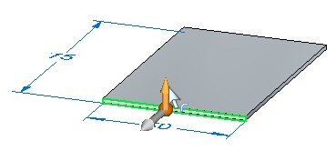
Create a flange with the default parameters that has the length of 40.00 mm.
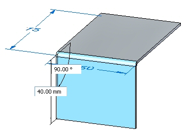
Create the flange shown below with a length of 10.00 mm.
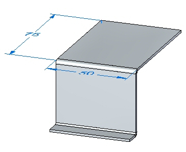
The following steps will demonstrate the different options for corner relief.
Select the face shown and click the flange handle. Click flange options and ensure the Corner Relief is set to Bend Only.
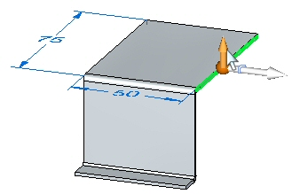
Pull the flange to the end of the bottom of the flange just created. Observe the corner relief.
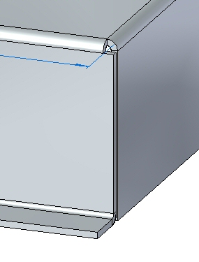
Click the Undo command to remove the flange you just created.
Select the face shown and click the flange handle. Click the Options button and set the Corner Relief to Bend and Face.
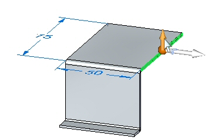
Pull the flange to the same distance as in the previous step. Observe the corner relief.
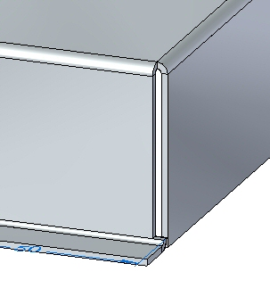
Click the Undo command to remove the flange you just created.
Select the face shown and click the flange handle. Click the Options button and set the Corner Relief to Bend and Face Chain.
Pull the flange to the same distance as in the previous step. Observe the corner relief.
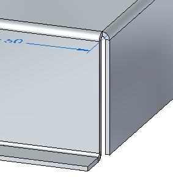
Close the file without saving.
Open relief_activity.psm.
This sheet metal part has a material thickness of 1.50 mm and a bend radius of 1.00 mm.
Select the face shown and select the flange start handle.
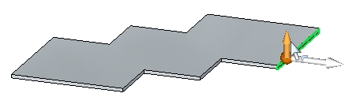
Click the Partial Flange option and create a flange with a length of 30.00 mm.
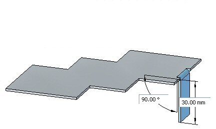
Partial flanges are created with a width equal to 1/3 of the thickness face chosen, and the selection point is defines the edge of the partial flange. The flange can be modified to the desired width using dimensions to control the width.
Click the Smart Dimension command.
Place a dimension on the bottom edge of the flange just created. Change the width of the flange to 15.00 mm by editing the dimension.
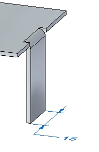
Select the face shown.
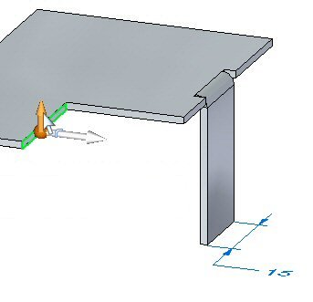
The origin of the start point will be changed by moving the steering wheel to the end of the thickness face. Move the steering wheel to the position shown, and select the flange command from the command bar.
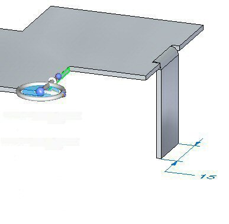
Click the partial flange option and create a flange with a length of 30.00 mm.
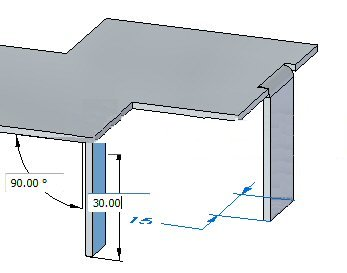
The origin of this flange partial flange is at the end of the thickness face and is 1/3 the length of the thickness face.
The default bend relief can be overridden during placement, or after placement when editing a bend.
Select the bend shown, then click the edit feature handle.
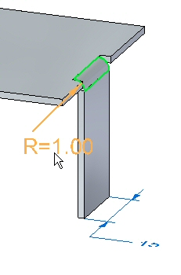
Click the Bend Options button.
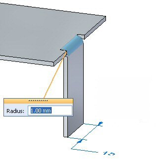
Select the Override Global Value next to the Depth field and change the depth to 3.00 mm. Repeat the step to change the width to 2.00 mm.
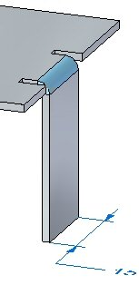
Experiment with different lengths, widths, and types of bend relief before dismissing the bend options dialog box and observe the results.
Close the sheet metal document without saving.
Open corner_activity.psm.
This sheet metal part has a material thickness of 1.50 mm and a bend radius of 1.00 mm.
Select the region shown and create a tab by pulling the handle up.
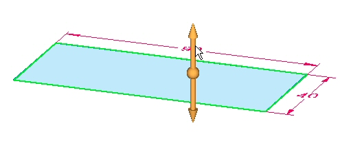
Select all thickness faces and then click the flange start handle.
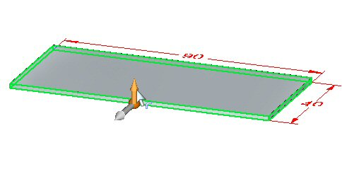
Create flanges with the length of 20.00 mm as shown.
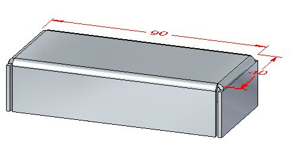
When more than one thickness edge is used to create flanges, observe the following:
-
Shorter sides are bent first.
-
Relief cuts, when required are made to the longer sides.
When 3 or more thickness faces of the same length are encountered: Thickness faces are sorted according to length and parallelism. Parallel faces are bent first.
Click the 2–Bend Corner command.
Select the two bends shown below.
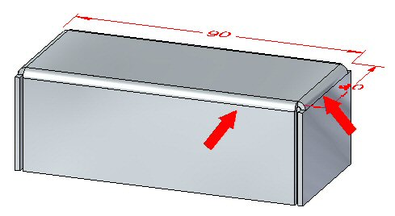
The command closes the corner upon selection of the two bends.
If a warning message box displays a message indicating an invalid gap value, dismiss the message box.
Change the gap value to 0.30 mm and the overlap ratio to 0.75. Observe the results.
Click the Flip option and observe the results.
Click the Closed Corner option. Observe the how the corner closes.
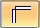
Change the Corner Treatment to Closed, and set the gap value to 0.30 mm. Observe the change.
Change the Corner Treatment to Circular Cutout, and set the gap value to 0.40 mm. Set the diameter to 1.50 mm. Observe the change.
Close the sheet metal document without saving.
Open bend_activity.psm.
Select the region shown and create a cutout.
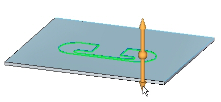
Sketch a line as shown across the tab.
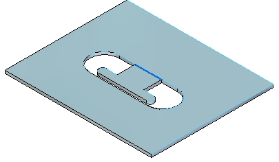
Click the Bend command.
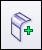
Select the line as shown.
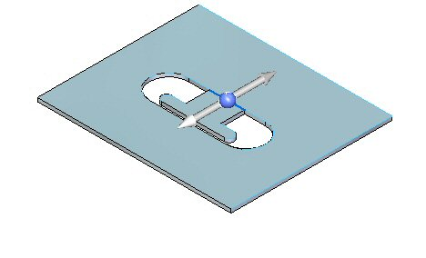
Select the Material Outside option.
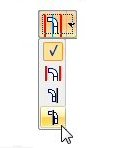
Select the side shown. Notice the extent of the bend traverses the length of the layer face.
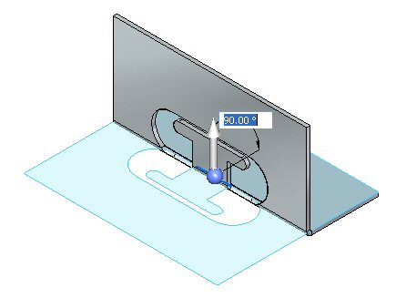
Click the Bend Options button.
Deselect Extend Profile and click OK.
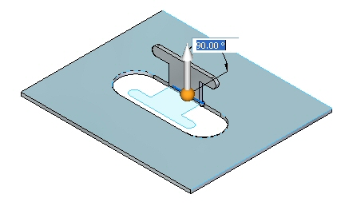
Right-click to complete the bend and add the flange. The results are shown.
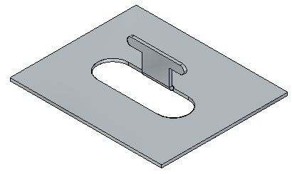
Click the Select tool and select the bend. Click the edit handle as shown.
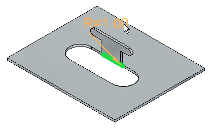
Click the Options button and set the relief to be round with a width of 5.00 mm and a depth of 5.00 mm.
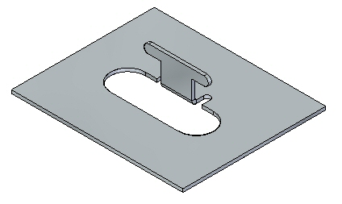
The relief could have been set during the creation of the bend in the previous step. The purpose of changing the relief at this point is to demonstrate the ability to edit a previously placed feature.
Sketch a line as shown across the tab.
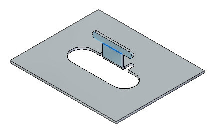
Click the Bend command.
Select the line as shown.
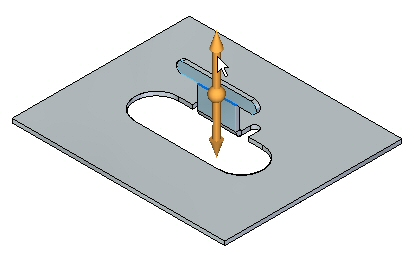
Select the Material Inside option.
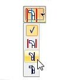
Right-click to complete the bend.
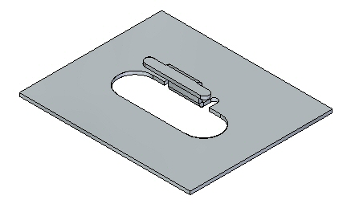
Rotate the view and examine the two bends just placed. The flat pattern is shown.
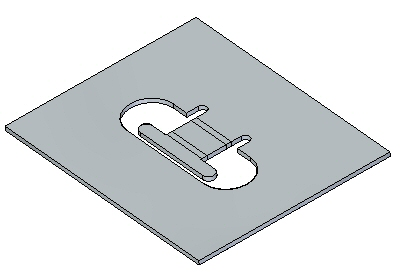
The two bends placed used the length of existing material to create the flanges. Compare this workflow to the jog command in another activity.
Creating a flat pattern will be covered in another activity.
Close the file without saving.
Open move_activity.psm.
Select the face shown.
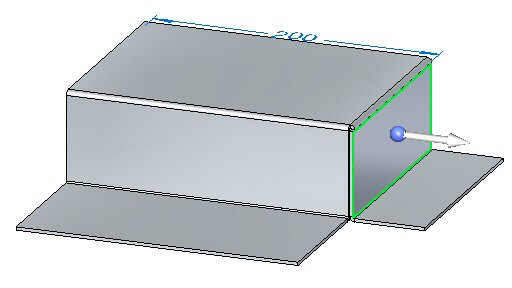
Select the origin of the steering wheel and position the steering wheel as shown.
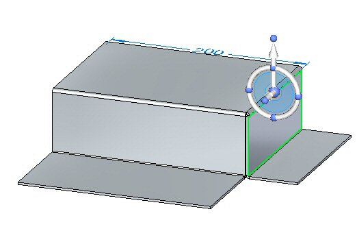
Select the steering wheel torus and rotate the flange by an angle of 25o as shown.
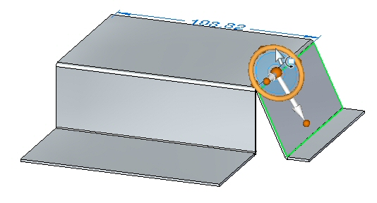
The lower horizontal flange is shortened as the face is moved. The horizontal flange can be made to maintain the 90o bend angle by adjusting Design Intent panel relationships that are preserved and adding the components of the flange to the selection.
Click the 2–Bend corner command.
Select the two bends shown.
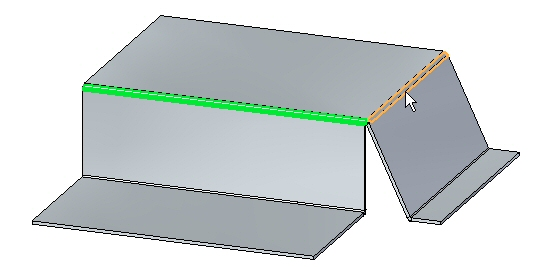
The corner is closed.
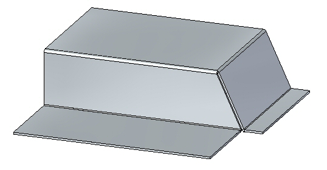
Select the face shown.
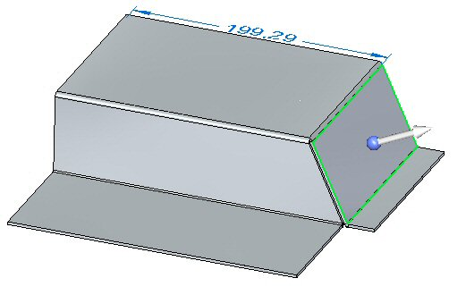
Click Advanced on the Design Intent dialog box and ensure that the Maintain Thickness Chain option in the Advanced Design Intent panel is not activated.
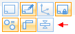
Select the steering wheel torus and rotate the flange by an angle of –35o as shown.
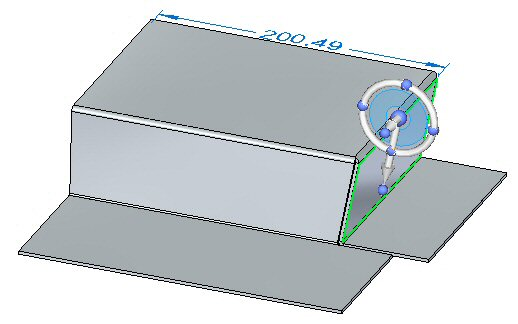
The closed corner remains closed and modifies both flanges associated with the corner.
Close the sheet metal document without saving.
In this activity you placed flanges and partial flanges. You edited end and corner treatments for bends. You used the closed the corners of adjacent thickness faces at the intersection of two bends. Bends were placed on the layer face and flanges were created and edited from these bends.
-
Click the Close button in the upper- right corner of this activity window.
Answer the following questions:
-
What is the purpose of bend relief in a sheet metal part?
-
How do you insert a synchronous bend into a sheet metal part?
-
How can you use the steering wheel to change the angle of a bend?
-
How can you change and customize the values of the bend formula?
-
List three types of corner relief and describe each type.